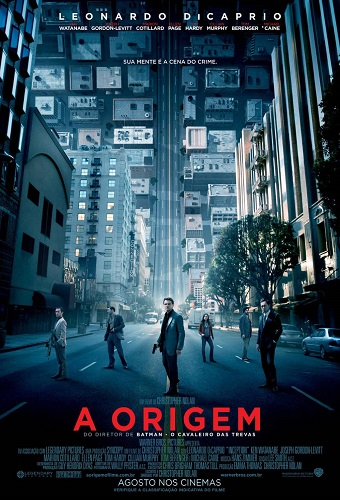

| Título do Filme |
Link |
Resumo |
Capa |
| Joker |
Assistir |
"Joker" (2019), dirigido por Todd Phillips, é uma exploração profunda do personagem Arthur Fleck, interpretado por Joaquin Phoenix. Arthur é um comediante falido com problemas mentais que vive à margem da sociedade em Gotham City nos anos 1980. Sua vida desmorona em uma espiral de violência e desespero quando ele é constantemente maltratado e ignorado pelo sistema social. Eventualmente, Arthur se transforma no icônico vilão Joker. O filme é um comentário sombrio sobre a saúde mental, desigualdade social e a falta de compaixão na sociedade. Phoenix entrega uma atuação intensa e aclamada pela crítica. |
 |
| O Espetacular Homem-Aranha |
Assistir |
"O Espetacular Homem-Aranha" (2012), dirigido por Marc Webb, reinventa a origem do icônico herói da Marvel. Peter Parker, interpretado por Andrew Garfield, é um adolescente que vive com seus tios em Nova York e descobre uma maleta que pertencia ao seu pai, levando-o a Oscorp. Lá, Peter é picado por uma aranha geneticamente modificada, adquirindo superpoderes. Ele se torna o Homem-Aranha, enfrentando o vilão Lagarto, alter ego do Dr. Curt Connors. O filme destaca a busca de Peter por respostas sobre seus pais e sua luta para proteger Nova York. Além da ação, o filme explora o romance entre Peter e Gwen Stacy, vivida por Emma Stone |
 |
| Interstellar |
Assistir |
Interestelar é um épico de ficção científica dirigido por Christopher Nolan. A trama se passa em um
futuro onde a Terra enfrenta mudanças climáticas severas, ameaçando a sobrevivência da humanidade.
Cooper, um ex-piloto da NASA, é recrutado para liderar uma missão espacial em busca de novos planetas
habitáveis através de um buraco de minhoca perto de Saturno. Juntamente com uma equipe de cientistas,
ele explora mundos desconhecidos e enfrenta desafios extremos. O filme aborda temas de sacrifício, amor
e a relação entre pais e filhos, enquanto Cooper luta para garantir um futuro para seus filhos e para
toda a humanidade.
|
 |
| A Origem |
Assistir |
"A Origem" (2010) é um thriller de ficção científica onde Leonardo DiCaprio interpreta Dom Cobb, um ladrão especializado em extrair segredos do subconsciente das pessoas durante o sonho. Contratado para o impossível: implantar uma ideia na mente de alguém. Para isso, ele forma uma equipe e embarca em uma missão complexa dentro do mundo dos sonhos, onde as regras da realidade não se aplicam. O objetivo é implantar uma ideia na mente de Robert Fischer (Cillian Murphy) para alterar o destino de seu império corporativo. O filme é uma exploração visualmente impressionante de sonhos, realidades sobrepostas e os limites da percepção |
 |